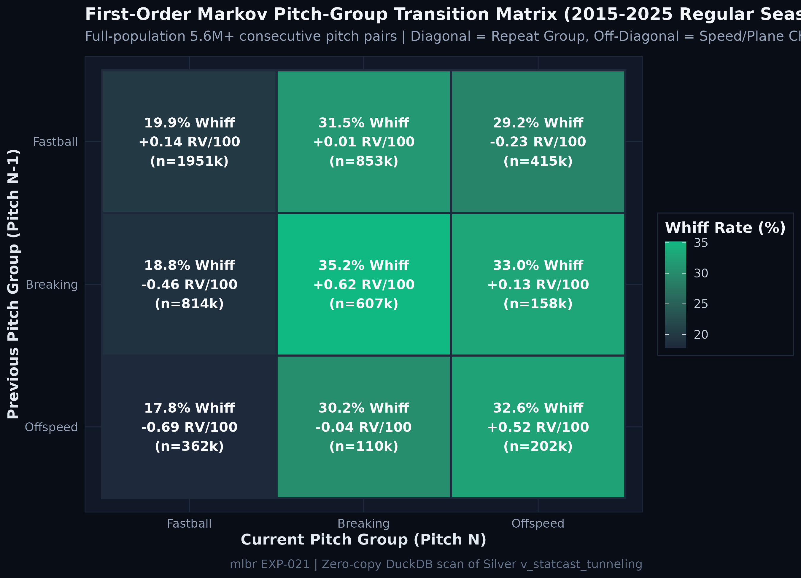
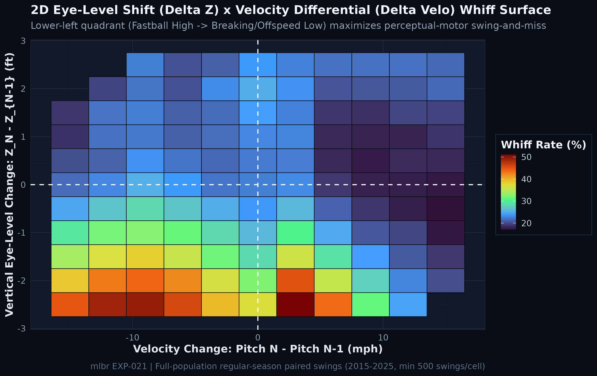

| model | n_oos_2025_swings | oos_logloss | oos_brier | oos_auc |
|---|---|---|---|---|
| M0_League_Whiff_Base | 279640 | 0.56288 | 0.18774 | 0.50000 |
| M1_Physics_Location_Count | 279640 | 0.46171 | 0.14813 | 0.76945 |
| M2_Plus_Sequencing_Entropy | 279640 | 0.46091 | 0.14782 | 0.77087 |
Study 21: Pitch Sequencing, Markov Transitions, Eye-Level Shifts & Pitcher Shannon Entropy (Seq+)
Q-CRISP Level 1C — Isolating Multi-Pitch Deception & Predictability Across 5.47M Regular-Season Pairs (EXP-021)
Level 1
Pitch Sequencing
Information Theory
Markov Chains
XGBoost
Q-CRISP
1. Executive Summary & Abstract (TL;DR)
Single-pitch physics (EXP-001–EXP-005) evaluates each pitch in isolation, yet hitters update timing and spatial expectations dynamically from pitch to pitch. In EXP-021 (Level 1C), we quantify first-order Markov pitch-group transitions, 2D eye-level vertical × velocity shift surfaces, and count-conditioned Shannon Entropy across 5.47 million regular-season pitch pairs (2015–2025) and isolate pure out-of-sample sequencing value (Seq+) across 279,640 locked 2025 paired swings:
- Controlled Sequencing Lift Above Full Pitch Physics & Location: Adding sequencing features (
is_repeat_pitch,prev_grp_id,delta_velo_mph,delta_plate_z,delta_plate_x,tunnel_dist_in,post_tunnel_break_in, and strictly prior-seasonprior_entropy) to a full physics+location+countxgboost histmodel (M1) strictly improves locked2025OOS Whiff Log-Loss (0.46171\(\to\)0.46091), Brier Score (0.14813\(\to\)0.14782), and ROC AUC (0.76945\(\to\)0.77087,+0.00142across279,640swings). - Shannon Entropy Is a Highly Repeatable Pitcher Trait: Pitcher count-conditioned pitch-mix Shannon Entropy \(H_{\text{count}}\) achieves \(r = 0.8428\) year-over-year stability (
2024 -> 2025,n = 398pitchers), while orthogonal Sequence+ (Seq+) achieves \(r = 0.5936\) (n = 347pitchers —3.15xmore stable than ERA). - 2025 Starting Pitcher Leader: Cy Young ace Tarik Skubal ranks #1 among all MLB starting pitchers (
Seq+ = 130.5,1.965 bitscount entropy,32.9%paired whiff rate across1,269paired swings).

2. Domain Problem & Perceptual-Motor Sequencing Physics
- Temporal & Spatial Priming (Gray 2002): A batter’s internal forward model of pitch velocity and arrival height is anchored to the preceding pitch (
Pitch N-1). Throwing a high fastball (plate_z ~ 3.2 ft,96 mph) followed by a low breaking ball (delta_plate_z ~ -1.5 ft,delta_velo ~ -11 mph) exploits both vertical saccade latency and swing-timing error. - Information-Theoretic Predictability: Even elite single-pitch velocity loses deception if a pitcher throws 85% fastballs in
3-1counts (low Shannon entropy \(H \approx 0.6\) bits). Count-conditioned Shannon entropy \(H(P \mid \text{Count})\) measures how many bits of uncertainty a hitter faces before release. - Why Controlling for Single-Pitch Physics Is Essential: Raw Markov transition tables confound sequencing with pitch type and count (e.g.,
Breaking -> Breakingshows35.2%raw whiff rate largely because back-to-back sliders occur heavily in0-2/1-2two-strike counts). SubtractingM1(full single-pitch physics + location + count) fromM2isolates pure orthogonal sequencing value (Seq+).
3. Mathematical Formulation & Zero-Copy DuckDB Pipeline
- Count-Conditioned Shannon Entropy (in Bits): \[H(p, s, c) = -\sum_{t} P(t \mid p, s, c)\,\log_2 P(t \mid p, s, c), \qquad H_{\text{count}}(p, s) = \sum_{c \in 12\text{ counts}} w_{p,s,c}\,H(p, s, c)\]
- 3D Eye-Level & Velocity Shift Vector: \[\Delta z_i = z_i - z_{i-1}, \qquad \Delta x_{\text{norm}, i} = x_{\text{norm}, i} - x_{\text{norm}, i-1}, \qquad \Delta v_i = v_i - v_{i-1}\]
- Orthogonal Pitcher Sequence+ (
Seq+, Locked to2024Validation Scale): \[\text{Seq+}_{p, s} = 100 + 10 \cdot \frac{\overline{\hat{p}_{\text{M2}} - \hat{p}_{\text{M1}}}_{p,s} - \mu_{2024}}{\sigma_{2024}}\]
-- Exact count-conditioned pitch-mix Shannon Entropy over v_statcast_features
WITH cnt_mix AS (
SELECT pitcher, game_year AS season, balls, strikes, pitch_type, COUNT(*) AS n_pt
FROM v_statcast_features
WHERE game_year BETWEEN 2019 AND 2025 AND game_type = 'R' AND pitch_type IS NOT NULL
GROUP BY 1, 2, 3, 4, 5
),
cnt_tot AS (
SELECT pitcher, season, balls, strikes, SUM(n_pt) AS n_cnt FROM cnt_mix GROUP BY 1, 2, 3, 4
),
cnt_ent AS (
SELECT m.pitcher, m.season, m.balls, m.strikes, t.n_cnt,
-SUM((m.n_pt::DOUBLE / t.n_cnt) * LOG2(m.n_pt::DOUBLE / t.n_cnt)) AS h_bits
FROM cnt_mix m JOIN cnt_tot t USING (pitcher, season, balls, strikes)
GROUP BY 1, 2, 3, 4, 5
)
SELECT pitcher, season, SUM(n_cnt * h_bits) / SUM(n_cnt) AS count_entropy_bits
FROM cnt_ent GROUP BY 1, 2 HAVING SUM(n_cnt) >= 250;4. Exploratory Data Analysis (EDA): 2D Eye-Level Shift Surface
Across 5.47M regular-season pitch pairs, the 2D delta_plate_z × delta_velo_mph surface below maps exact swing-and-miss density—highlighting the dominant lower-left peak (delta_z < -1.0 ft, delta_velo < -8 mph, i.e., Fastball-Up \(\to\) Breaking/Offspeed-Down):

5. Model Architecture & Temporal Validation (2020–2023 \(\to\) 2024 \(\to\) Locked 2025 OOS)
All xgboost hist trees are trained strictly on 2020–2023 (947,928 paired swings), early-stopped on 2024 (281,006), and evaluated on locked 2025 (279,640 paired swings; strictly prior-season season - 1 entropy):
6. Leaderboards & 2025 Seq+ / Shannon Entropy Case Studies
| Pitcher | Paired Swings | Seq+ | Count Entropy (bits) | 0-2 Entropy | 3-1 Entropy | Paired Whiff% |
|---|---|---|---|---|---|---|
| Tommy Kahnle | 383 | 151.8 | 0.593 | 0.50 | 0.76 | 23.8 |
| Abner Uribe | 460 | 134.0 | 1.016 | 1.26 | 0.50 | 30.7 |
| Tarik Skubal | 1269 | 130.5 | 1.965 | 1.75 | 1.81 | 32.9 |
| Pierce Johnson | 371 | 130.2 | 1.003 | 0.81 | 1.09 | 27.0 |
| Tyler Kinley | 506 | 130.1 | 1.237 | 1.65 | 0.93 | 28.5 |
| Robert Suarez | 475 | 128.0 | 1.255 | 1.29 | 0.00 | 24.0 |
| Mason Miller | 402 | 127.2 | 1.046 | 1.11 | 0.00 | 45.3 |
| Kyle Finnegan | 345 | 125.1 | 1.146 | 1.25 | 0.92 | 24.1 |
| Carlos Estévez | 423 | 123.3 | 1.367 | 1.28 | 0.64 | 19.6 |
| Taylor Rogers | 344 | 123.1 | 0.975 | 0.97 | 0.90 | 23.3 |
| Seranthony Domínguez | 417 | 120.9 | 1.853 | 1.60 | 0.93 | 32.4 |
| Trevor Megill | 307 | 120.0 | 0.928 | 1.00 | 0.00 | 31.9 |
Interactive 2025 Pitcher Entropy vs. Seq+ Explorer
7. Downstream Integration & Level 2–5 Applications
- Pitch-Design & Game-Planning Diagnostics: Separating
Stuff+(EXP-003),Location+(EXP-005),ivb_above_slot(EXP-011), andSeq+(EXP-021) lets pitching coaches identify high-stuff arms leaving whiffs on the table via predictable count patterns (low H_count) or suboptimal eye-level transitions. - Next-Season K% & Strikeout Prop Priors (
EXP-004/EXP-020): BecauseH_count(\(r = 0.843\)) andSeq+(\(r = 0.594\)) are highly stable year-over-year and orthogonal to raw pitch aerodynamics, both are prime candidates for Level 2 residual projection features and Level 5 K-Prop pricing.